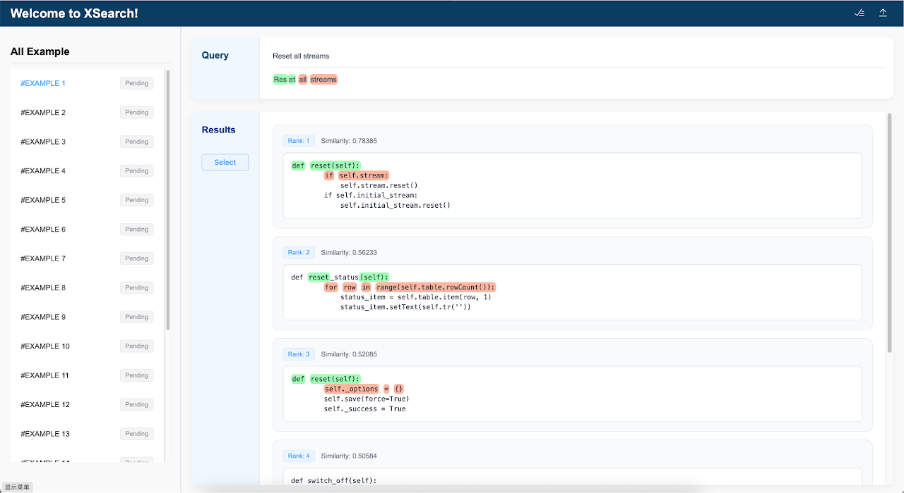
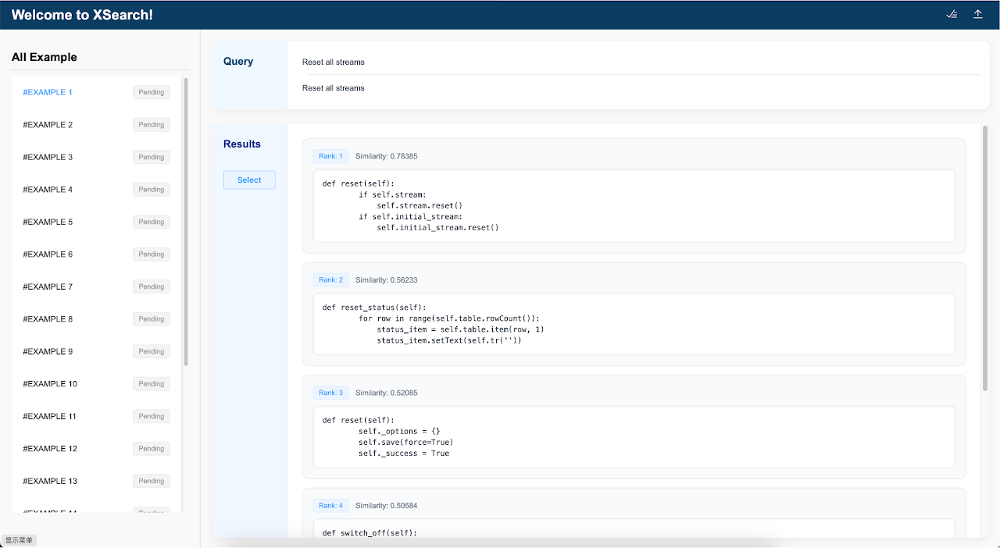
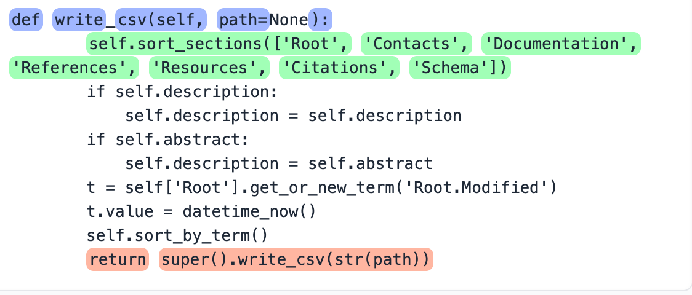
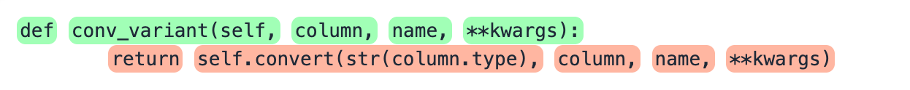
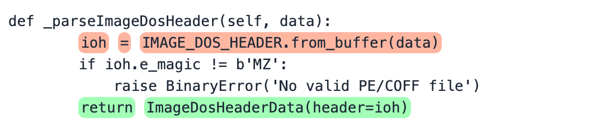
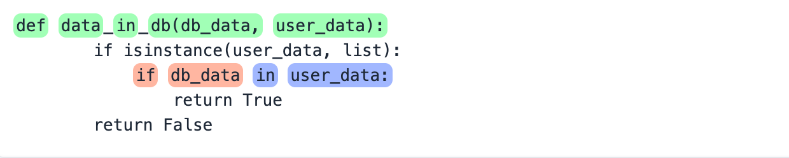
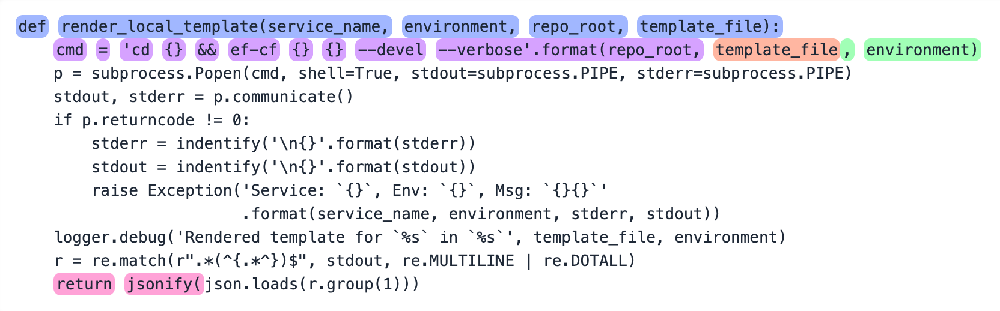

| Group | User | Programming Skill (1–5) |
Python Familiarity (1–5) |
Education Level | Accuracy | Time (s) |
|---|---|---|---|---|---|---|
| 1 | P1 | 2 | 2 | Bachelor | 65 | 2592 |
| P11 | 3 | 4 | Bachelor | 45 | 3336 | |
| 2 | P2 | 3 | 3 | Bachelor | 70 | 2063 |
| P12 | 3 | 2 | Bachelor | 70 | 3833 | |
| 3 | P3 | 4 | 4 | PhD | 90 | 1104 |
| P13 | 3 | 3 | PhD | 70 | 1077 | |
| 4 | P4 | 5 | 5 | Research Staff | 75 | 1510 |
| P14 | 5 | 5 | Research Staff | 75 | 4780 | |
| 5 | P5 | 4 | 4 | Bachelor | 80 | 1916 |
| P15 | 4 | 4 | Master | 80 | 2241 | |
| 6 | P6 | 1 | 2 | Master | 85 | 1880 |
| P16 | 2 | 2 | Master | 85 | 2026 | |
| 7 | P7 | 4 | 4 | Bachelor | 80 | 1883 |
| P17 | 4 | 4 | Bachelor | 45 | 1407 | |
| 8 | P8 | 3 | 2 | Master | 85 | 2114 |
| P18 | 3 | 2 | Master | 80 | 3760 | |
| 9 | P9 | 3 | 4 | PhD | 85 | 1300 |
| P19 | 3 | 2 | Master | 80 | 2557 | |
| 10 | P10 | 4 | 4 | PhD | 85 | 1390 |
| P20 | 3 | 3 | PhD | 65 | 3617 |
To ensure the reliability and fairness of our user study, we carefully designed a participant pairing strategy based on self-reported metrics of programming background. Specifically, each experimental group (EG) participant (e.g., P1–P10) was paired with a control group (CG) counterpart (P11–P20) who exhibited comparable programming skill, Python familiarity, and education level.
This matched-pairing design minimizes individual-level variance and allows us to isolate the effect of explanation in semantic code search performance.

In this interface, participants are shown additional explainability information. For each recommended code snippet, the interface highlights which concepts in the query align with specific parts of the code, helping users understand why the code was retrieved.

This interface simulates a traditional code search experience. It presents the same queries and retrieved code snippetsas the experimental group but without any explanation or concept-level alignment information.
We categorize the 20 study queries into five coarse-grained daily programming task types. For each type, we show one representative example using two screenshots: the query and its ground-truth code.




